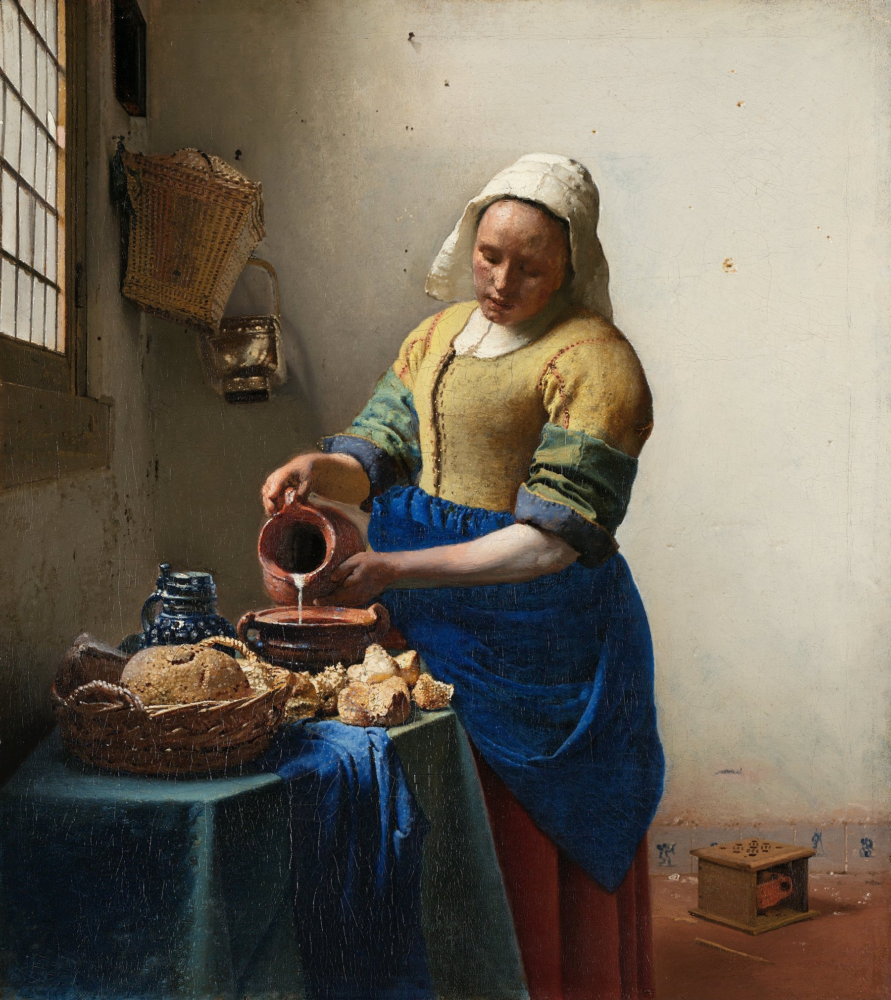

倒牛奶的女仆 The Milkmaid
维米尔 · 约1660年 · 阿姆斯特丹荷兰国立博物馆
Johannes Vermeer · c. 1660 · Rijksmuseum, Amsterdam
图片：Wikimedia Commons，公有领域 / Image: Wikimedia Commons, public domain

发现 · Discover
窗边的光 Light from the window
光从左边的窗户照进来，落在女仆、面包和墙上。
Light streams in from the window on the left, falling on the maid, the bread and the wall.
倒牛奶 Pouring milk
她专注地把牛奶倒进一个矮矮的陶罐里，动作很慢、很稳。
She carefully pours milk into a squat earthenware pot, slowly and steadily.
桌上的面包 The bread
桌上放着几种不同的面包。
Several kinds of bread lie on the table.
瓷砖上的丘比特 Cupid on the tiles
墙脚有一块代尔夫特瓷砖，画着拿弓的丘比特。
At the foot of the wall, a Delft tile shows Cupid with his bow.
瓷砖上的旅人 The traveller
脚炉右边的瓷砖上，画着一个拿手杖、背行囊的旅人。
On the tile to the right of the foot warmer is a traveller with a walking stick and knapsack.
脚炉 The foot warmer
地上的木箱是一个脚炉，里面放着一盆炭。
The box on the floor is a foot warmer, holding a pot of coals.
故事 · The story
ACT I 第一幕 · 一个安静的早晨 A quiet morning
一间普通的厨房，一个女仆在窗边倒牛奶。维米尔把这个平凡的瞬间，画得像时间停止了一样。
An ordinary kitchen, a maid pouring milk by the window. Vermeer painted this everyday moment as if time had stopped.
约1660年 · 阿姆斯特丹荷兰国立博物馆 / c. 1660 · Rijksmuseum, Amsterdam
ACT II 第二幕 · 画布下的秘密 Beneath the paint
2022年，荷兰国立博物馆用先进的扫描技术研究这幅画，发现了两个后来被盖掉的物品：墙上挂罐子的架子，和地上的一个火盆。维米尔后来用脚炉、瓷砖和地板盖住了火盆。
In 2022, the Rijksmuseum examined the painting with advanced scanning and found two objects he later painted over: a jug holder on the wall and a fire basket on the floor. He covered the fire basket with the foot warmer, tiles and floor.
约1660年 · 阿姆斯特丹荷兰国立博物馆 / c. 1660 · Rijksmuseum, Amsterdam
ACT III 第三幕 · 不是慢慢画出来的 Not painted slowly
研究还发现，女仆左臂下有一道快速画上的粗黑线。原来维米尔是先用明暗快速画出整体，再慢慢画细节。人们一直以为他画得极慢、极精确，这个看法正在改变。
The research also found a quick, thick black line beneath the maid's left arm. Vermeer first sketched the scene rapidly in light and dark, then developed the detail. The idea that he always worked slowly and precisely is now being revised.
约1660年 · 阿姆斯特丹荷兰国立博物馆 / c. 1660 · Rijksmuseum, Amsterdam
倒了三百多年的牛奶。 Milk still pouring, after more than 350 years.
作品档案 · Artwork record
| 画家（生卒年） · Artist (dates) | 约翰内斯·维米尔（1632–1675） / Johannes Vermeer (1632–1675) |
|---|---|
| 画名 · Title | 倒牛奶的女仆 / The Milkmaid |
| 年份 · Date | 约1660年，代尔夫特 / c. 1660, Delft |
| 材质 · Medium | 布面油画 / Oil on canvas |
| 尺寸 · Dimensions | 45.5 × 41 cm |
| 收藏地 · Collection | 阿姆斯特丹荷兰国立博物馆（馆藏编号 SK-A-2344） / Rijksmuseum, Amsterdam (SK-A-2344) |
关于画家 · About the artist
约翰内斯·维米尔（1632–1675），荷兰画家，一生都在代尔夫特生活和创作。他留下的画作只有约35幅，以描绘室内的光线著称。
Johannes Vermeer (1632–1675) was a Dutch painter who lived and worked in Delft all his life. Only about 35 of his paintings survive, famous for their rendering of light in quiet interiors.
更多维米尔的画 · More by Johannes Vermeer